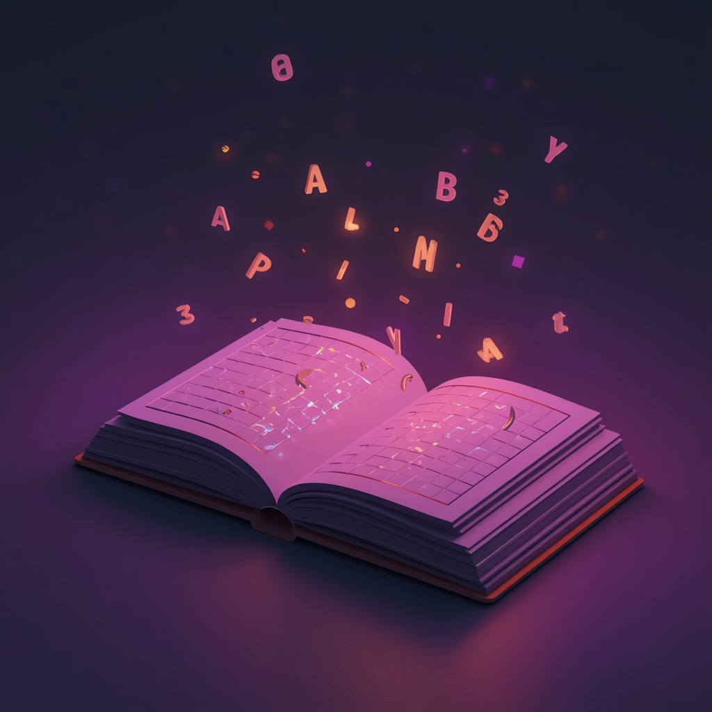

Материалы сделаны не «для галочки» — чтобы с первого выхода на линию ты разговаривал с родителями уверенно, спокойно и по делу.

Родители оставляют заявку не просто так: за ней почти всегда стоит тревога — ребёнок медленно читает, не понимает текст, мучается с уроками. От того, как ты проведёшь разговор, зависит:
Наша цель — доходимость не ниже 50% по ключевым слотам. Для этого важны не только скрипты, но и то, как ты ими пользуешься.
Что говорить по шагам, чтобы за 5–10 минут: понять ситуацию ребёнка, показать пользу диагностики, договориться о конкретном дне и времени и зафиксировать, что родитель будет онлайн в этот слот.
Как говорить живо, а не «читать текст»: реагировать на ответы, перефразировать запрос родителя и не молчать во время звонка.
Как проговаривать день и время по Москве, задавать фразу подтверждения и объяснять ценность слота — без давления, но так, чтобы люди приходили.
Почитал — тут же проговорил вслух, записал себя на аудио, попробовал в ролевой игре.
Важно понимать смысл каждого шага: зачем мы это спрашиваем, что хотим услышать и к чему ведём родителя.
Задача обучения — не сделать из тебя робота по скрипту, а дать опору и уверенность, чтобы каждый твой звонок помогал родителю и приводил его на диагностику.
10 шагов от приветствия до фиксации записи — с примерами и разбором каждого блока.
Живая речь вместо чтения по скрипту: реакция на ответы, перефраз, работа с паузами.
Как подтверждать запись, говорить про переносы без давления и объяснять ценность слота.